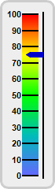
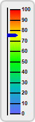

This example demonstration various orientations for vertical linear meters.
In a vertical linear meter, the scale labels can be positioned on the left or right side of the meter scale. This is controlled by the last argument to
LinearMeter.setMeter, which can be
Left or
Right.
The following is the command line version of the code in "cppdemo/vlinearmeterorientation". The MFC version of the code is in "mfcdemo/mfcdemo". The Qt Widgets version of the code is in "qtdemo/qtdemo". The QML/Qt Quick version of the code is in "qmldemo/qmldemo".
#include "chartdir.h"
void createChart(int chartIndex, const char *filename)
{
// The value to display on the meter
double value = 75.35;
// Create a LinearMeter object of size 70 x 240 pixels with very light grey (0xeeeeee)
// backgruond and a light grey (0xccccccc) 3-pixel thick rounded frame
LinearMeter* m = new LinearMeter(70, 240, 0xeeeeee, 0xcccccc);
m->setRoundedFrame(Chart::Transparent);
m->setThickFrame(3);
// This example demonstrates putting the text labels at the left or right side by setting the
// label alignment and scale position.
if (chartIndex == 0) {
m->setMeter(28, 18, 20, 205, Chart::Left);
} else {
m->setMeter(20, 18, 20, 205, Chart::Right);
}
// Set meter scale from 0 - 100, with a tick every 10 units
m->setScale(0, 100, 10);
// Add a smooth color scale to the meter
double smoothColorScale[] = {0, 0x6666ff, 25, 0x00bbbb, 50, 0x00ff00, 75, 0xffff00, 100,
0xff0000};
const int smoothColorScale_size = (int)(sizeof(smoothColorScale)/sizeof(*smoothColorScale));
m->addColorScale(DoubleArray(smoothColorScale, smoothColorScale_size));
// Add a blue (0x0000cc) pointer at the specified value
m->addPointer(value, 0x0000cc);
// Output the chart
m->makeChart(filename);
//free up resources
delete m;
}
int main(int argc, char *argv[])
{
createChart(0, "vlinearmeterorientation0.png");
createChart(1, "vlinearmeterorientation1.png");
return 0;
}
© 2023 Advanced Software Engineering Limited. All rights reserved.